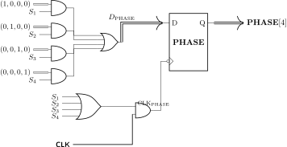
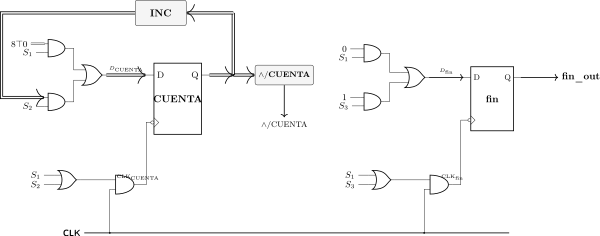
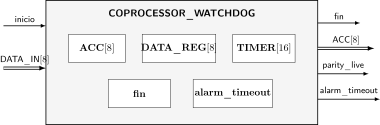
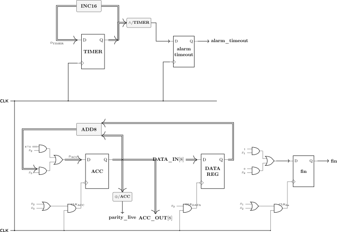

Problemas Resueltos y Casos de Estudio en AHPL
En este capítulo consolidamos los fundamentos desarrollados en la primera parte del libro a través de casos de estudio básicos. Los ejercicios abordan el diseño de controladores secuenciadores, temporizadores con unidades funcionales combinatorias y sistemas con concurrencia global en hardware.
Controlador Secuenciador: Motor Paso a Paso Bidireccional
Enunciado del Problema: Secuenciador de Fases
Diseñe un controlador digital para un motor paso a paso de 4 fases con excitación de paso completo (full-step: \(1000 \to 0100 \to 0010 \to 0001\)). El circuito dispone de las entradas escalares \(\text{enable}\) y \(\text{dir}\), y del registro de salida \(\text{PHASE}[4]\) conectado a las bobinas del estator. Si \(\text{enable} = 0\), el motor permanece estático en su fase actual sin avanzar; si \(\text{enable} = 1\) y \(\text{dir} = 0\), avanza secuencialmente en sentido horario (\(1 \to 2 \to 3 \to 4 \to 1\)), mientras que si \(\text{enable} = 1\) y \(\text{dir} = 1\), avanza en sentido antihorario (\(1 \to 4 \to 3 \to 2 \to 1\)).
Descripción en AHPL
El comportamiento se modela mediante una secuencia cíclica donde cada paso representa una fase física de activación de las bobinas del estator. En cada paso se evalúa \(\text{enable}\) y \(\text{dir}\) para seleccionar el salto hacia la fase siguiente o anterior:
Código AHPL
MODULE: \(\text{STEPPER_MOTOR}.\)
MEMORY: \(\text{PHASE}[4].\)
INPUTS: \(\text{enable}; \;
\text{dir}.\)
OUTPUTS: \(\text{PHASE}[4].\)
\(1 \quad \text{PHASE} \leftarrow (1, 0, 0,
0)\)
\(\quad \rightarrow (\overline{\text{enable}},
\text{enable} \land \overline{\text{dir}}, \text{enable} \land
\text{dir}) / (1, 2, 4).\)
\(2 \quad \text{PHASE} \leftarrow (0, 1, 0,
0)\)
\(\quad \rightarrow (\overline{\text{enable}},
\text{enable} \land \overline{\text{dir}}, \text{enable} \land
\text{dir}) / (2, 3, 1).\)
\(3 \quad \text{PHASE} \leftarrow (0, 0, 1,
0)\)
\(\quad \rightarrow (\overline{\text{enable}},
\text{enable} \land \overline{\text{dir}}, \text{enable} \land
\text{dir}) / (3, 4, 2).\)
\(4 \quad \text{PHASE} \leftarrow (0, 0, 0,
1)\)
\(\quad \rightarrow (\overline{\text{enable}},
\text{enable} \land \overline{\text{dir}}, \text{enable} \land
\text{dir}) / (4, 1, 3).\)
END SEQUENCE
END
Síntesis a Hardware
Para la FSM One-Hot, las ecuaciones de entrada a los biestables de paso (\(D_{S_k}\)) se derivan directamente de los términos de salto: \[\begin{align*} D_{S_1} &= S_1 \land \overline{\text{enable}} \lor S_4 \land (\text{enable} \land \overline{\text{dir}}) \lor S_2 \land (\text{enable} \land \text{dir}) \\ D_{S_2} &= S_2 \land \overline{\text{enable}} \lor S_1 \land (\text{enable} \land \overline{\text{dir}}) \lor S_3 \land (\text{enable} \land \text{dir}) \\ D_{S_3} &= S_3 \land \overline{\text{enable}} \lor S_2 \land (\text{enable} \land \overline{\text{dir}}) \lor S_4 \land (\text{enable} \land \text{dir}) \\ D_{S_4} &= S_4 \land \overline{\text{enable}} \lor S_3 \land (\text{enable} \land \overline{\text{dir}}) \lor S_1 \land (\text{enable} \land \text{dir}) \end{align*}\]
En la lógica de datos, el registro de salida \(\text{PHASE}[4]\) se actualiza en todos los pasos activos cargando la constante de fase correspondiente: \[\begin{align*} \text{CLK}_{\text{PHASE}} &= \text{CLK} \land (S_1 \lor S_2 \lor S_3 \lor S_4) \\ D_{\text{PHASE}} &= S_1 \land (1,0,0,0) \lor S_2 \land (0,1,0,0) \lor S_3 \land (0,0,1,0) \lor S_4 \land (0,0,0,1) = (S_1, S_2, S_3, S_4) \end{align*}\]

Temporizador Industrial con Retardo a la Conexión (TON)
Enunciado del Problema: Temporizador TON
Diseñe un temporizador industrial con retardo a la conexión (Timer On-Delay) que dispone de una entrada de habilitación \(\text{inicio}\), una salida \(\text{fin_out}\), un registro contador de 8 bits \(\text{CUENTA}[8]\), un biestable de estado interno \(\text{fin}\) y una unidad combinatoria de incremento \(\text{INC}[8] <: \text{INC}(8)\). Mientras \(\text{inicio} = 0\), el sistema permanece en reposo con \(\text{CUENTA} = 0\) y \(\text{fin} = 0\); al activarse \(\text{inicio} = 1\), el contador \(\text{CUENTA}\) se incrementa sucesivamente en cada ciclo de reloj. Si \(\text{inicio}\) cae a \(0\) antes de saturar, el contador se reinicia a cero, mientras que al alcanzar el valor máximo (\(255\), detectado mediante la reducción \(\land/\text{CUENTA} = 1\)), el biestable interno \(\text{fin}\) se activa en alto (\(1\)) y permanece en dicho estado mientras \(\text{inicio} = 1\). La salida física \(\text{fin_out}\) refleja continuamente el estado del registro interno mediante la sentencia global \(\text{fin_out} = \text{fin}\).
Descripción en AHPL
Este ejercicio combina el uso de la unidad combinatoria de incremento \(\text{INC}\) con el operador de reducción AND (\(\land/\text{CUENTA}\)) para detectar la saturación del contador sin requerir bloques comparadores adicionales, conectando el registro interno \(\text{fin}\) a la salida \(\text{fin_out}\) mediante una sentencia global:
Código AHPL
MODULE: \(\text{TIMER_TON}.\)
MEMORY: \(\text{CUENTA}[8];
\; \text{fin}.\)
INPUTS: \(\text{inicio}.\)
OUTPUTS: \(\text{fin_out}.\)
CLUNITS: \(\text{INC}[8]
<: \text{INC}(8).\)
\(1 \quad \text{fin} \leftarrow 0; \quad
\text{CUENTA} \leftarrow 8 \top 0\)
\(\quad \rightarrow (\overline{\text{inicio}})
/ (1).\)
\(2 \quad \text{CUENTA} \leftarrow
\text{INC}(\text{CUENTA})\)
\(\quad \rightarrow (\overline{\text{inicio}},
\text{inicio} \land (\land/\text{CUENTA}), \text{inicio} \land
\overline{\land/\text{CUENTA}}) / (1, 3, 2).\)
\(3 \quad \text{fin} \leftarrow
1\)
\(\quad \rightarrow (\text{inicio},
\overline{\text{inicio}}) / (3, 1).\)
END SEQUENCE
\(\text{fin_out} = \text{fin}.\)
END
Síntesis a Hardware
Las ecuaciones de excitación de la Unidad de Control son: \[\begin{align*} D_{S_1} &= S_1 \land \overline{\text{inicio}} \lor S_2 \land \overline{\text{inicio}} \lor S_3 \land \overline{\text{inicio}} = (S_1 \lor S_2 \lor S_3) \land \overline{\text{inicio}} \\ D_{S_2} &= S_1 \land \text{inicio} \lor S_2 \land (\text{inicio} \land \overline{\land/\text{CUENTA}}) \\ D_{S_3} &= S_2 \land \text{inicio} \land (\land/\text{CUENTA}) \lor S_3 \land \text{inicio} \end{align*}\]
Para la Ruta de Datos:
Contador \(\text{CUENTA}[8]\): se carga con \(0\) en \(S_1\) y con \(\text{INC}(\text{CUENTA})\) en \(S_2\). \(\text{CLK}_{\text{CUENTA}} = \text{CLK} \land (S_1 \lor S_2)\).
Biestable \(\text{fin}\): se actualiza con \(0\) en \(S_1\) y con \(1\) en \(S_3\). \(\text{CLK}_{\text{fin}} = \text{CLK} \land (S_1 \lor S_3)\).
Salida \(\text{fin_out}\): generada por conexión combinacional directa \(\text{fin_out} = \text{fin}\) tras la salida \(Q\) del biestable \(\text{fin}\).

Monitoreo Concurrente y Sentencias Globales: Coprocesador con Watchdog Timer
Enunciado del Problema: Coprocesador con Temporizador de Seguridad
Diseñe un coprocesador de procesamiento síncrono que recibe la señal de arranque \(\text{inicio}\) y el bus de entrada \(\text{DATA_IN}[8]\) para capturar datos en \(\text{DATA_REG}[8]\), operar sobre un acumulador \(\text{ACC}[8]\) mediante un sumador \(\text{ADD8}[8] <: \text{ADD}(8; 8)\) y emitir la bandera \(\text{fin}\). Como mecanismo de protección industrial concurrente y monitoreo en tiempo real mediante sentencias globales tras END SEQUENCE, el hardware incorpora un temporizador autónomo \(\text{TIMER}[16]\) que se incrementa incondicionalmente en cada ciclo de reloj (\(\text{INC16}\)), una salida de desbordamiento \(\text{alarm_timeout}\) activada síncronamente al alcanzar la cuenta máxima (\(\land/\text{TIMER}\)), y una salida de paridad instantánea \(\text{parity_live} = \oplus/\text{ACC}\) evaluada permanentemente sobre el acumulador.

Justificación de la Estructura Global
Si intentáramos incrementar \(\text{TIMER}\) dentro de la secuencia, deberíamos escribir \(\text{TIMER} \leftarrow \text{INC}(\text{TIMER})\) en los pasos \(1, 2, 3, \dots\), consumiendo espacio de código y generando una red de multiplexación innecesaria. Al ubicar la transferencia después de END SEQUENCE:
La compuerta de reloj del registro \(\text{TIMER}\) no se inhibe por estados (\(CE = 1\) permanente), conectándose el reloj maestro directo al biestable.
La conexión \(\text{parity_live} = \oplus/\text{ACC}\) se evalúa continuamente en la red combinatoria sin añadir latencia de ciclos.
Código AHPL
MODULE: \(\text{COPROCESSOR_WATCHDOG}.\)
MEMORY: \(\text{ACC}[8]; \;
\text{DATA_REG}[8]; \; \text{TIMER}[16]; \; \text{alarm_timeout}; \;
\text{fin}.\)
INPUTS: \(\text{inicio}; \;
\text{DATA_IN}[8].\)
OUTPUTS: \(\text{fin}; \;
\text{alarm_timeout}; \; \text{parity_live}; \;
\text{ACC_OUT}[8].\)
CLUNITS: \(\text{INC16}[16]
<: \text{INC}(16); \; \text{ADD8}[8] <: \text{ADD}(8;
8).\)
\(1 \quad \text{fin} \leftarrow
1\)
\(\quad \rightarrow (\overline{\text{inicio}},
\text{inicio}) / (1, 2).\)
\(2 \quad \text{fin} \leftarrow 0; \quad
\text{DATA_REG} \leftarrow \text{DATA_IN}; \quad \text{ACC} \leftarrow 8
\top 0.\)
\(3 \quad \text{ACC} \leftarrow
\text{ADD8}(\text{ACC}; \text{DATA_REG})\)
\(\quad \rightarrow (\text{inicio},
\overline{\text{inicio}}) / (3, 1).\)
END SEQUENCE
\(\text{ACC_OUT} = \text{ACC};\)
\(\text{TIMER} \leftarrow
\text{INC16}(\text{TIMER});\)
\(\text{alarm_timeout} \leftarrow
\land/\text{TIMER};\)
\(\text{parity_live} =
\oplus/\text{ACC};\)
END
Síntesis a Hardware
La Unidad de Control y los Procesos Globales se sintetizan de la siguiente manera: \[\begin{align*} D_{S_1} &= S_1 \land \overline{\text{inicio}} \lor S_3 \land \overline{\text{inicio}} \\ D_{S_2} &= S_1 \land \text{inicio} \\ D_{S_3} &= S_2 \lor S_3 \land \text{inicio} \end{align*}\]
En las transferencias globales y conexiones combinatorias: \[\begin{align*} \text{CLK}_{\text{TIMER}} &= \text{CLK} \quad (\text{sin compuertas de habilitación}) \\ D_{\text{TIMER}} &= \text{INC16}(\text{TIMER}) \\ D_{\text{alarm_timeout}} &= \land/\text{TIMER} \\ \text{parity_live} &= \oplus/\text{ACC} \end{align*}\]

Pérdida de Utilidad Secuencial del Registro Global
El registro \(\text{TIMER}\) recibe el pulso de reloj en cada flanco descendente (\(\downarrow\)). Por tanto, si se intentara escribir una asignación \(\text{TIMER} \leftarrow 0\) dentro de cualquier paso de la secuencia (\(1, 2, 3\)), se crearía un conflicto estructural de múltiples fuentes sobre la entrada \(D\) y el reloj del registro. Los registros globales operan como procesos autónomos desacoplados de la FSM.